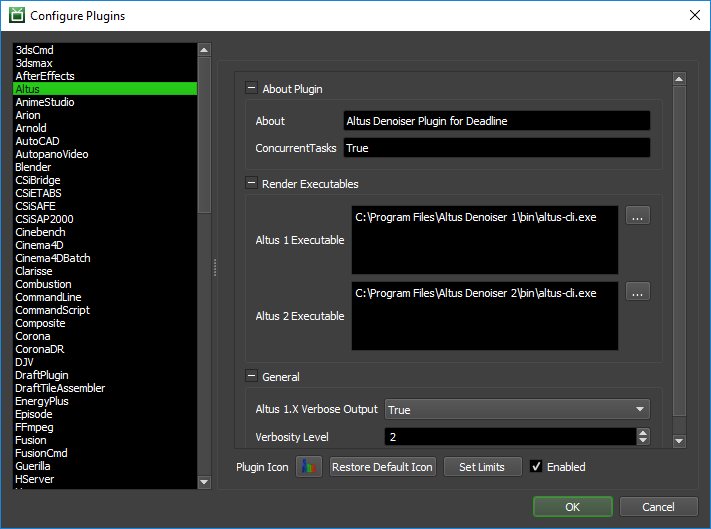

Altus¶
Job Submission¶
You can submit Altus jobs from the Monitor through the Submit menu.
Submission Options¶
The general submission options are explained in the Job Submission documentation.
Basic Altus Options¶
Output File: The output path for the rendered image.
Frame List: The list of frames to render.
Frames Per Task: This is the number of frames that will be rendered at a time for each job task.
Altus Version: The version of Altus installed. Certain features are enabled/disabled based on version.
Executable Type: Determines which Altus executable should be used.
Altus Options¶
Config File: The file path of the exported Config File. If specified then no other inputs are used.
Use Config File: If enabled, a *.cfg file should be defined in the above Config File field and will override all the following settings, except the GPU settings which act as a separate override.
Use Stereo EXR Images: Enable rendering of stereo images generated from the same seed. When enabled, each file image input in this input file section is expected to be a single stereo exr image.
RGB File(s): The file path of the beauty pass EXR image(s).
Position File(s): The file path of the world position pass EXR image(s).
Albedo File(s): The file path of the alb EXR image(s).
Visibility File(s): The file path of the vis EXR image(s).
Caustic File(s): The file path of the cau EXR image(s).
Normals File(s): The file path of the nrm EXR image(s).
Hair File(s): Added in Altus 2.3. The file paths of the hair EXR images(s).
Extra File(s): The file path of extra EXR image(s).
Additional File(s): The file path of additional EXR image(s)
Altus Settings¶
Renderer: Which renderer the original images were rendered from. Some renderers have additional optimizations.
Layer Preservation: Whether or not to preserve original layers in output image.
Output Quality: What quality should the main output be rendered at.
Output AOV Quality:What quality should AOV’s be rendered at.
Frame Radius: The radius of neighboring frames used for averaging motion blur when filtering animations.
Filter Radius: The filter radius (default 10).
First Sensitivity: Filter parameter that controls the sensitivity of the first candidate filter to color differences. A higher value leads to more aggressive filtering (default 0.45).
Second Sensitivity: Filter parameter that controls the sensitivity of the second candidate filter to color differences. A higher value leads to more aggressive filtering (default 0.45).
Final Sensitivity: Filter parameter that controls the sensitivity of the second pass filter to color differences. A higher value leads to more aggressive filtering (default 0.45).
Feature Sensitivity: Filter parameter that controls the sensitivity of all candidates, and the second pass filter, to feature differences. Lowering the kf value may help fine detail preservation and decrease smoothing in the final image.
Force Continue: In Altus 1.9 ‘Force Continue’ was changed to an integer value from 0-3. 0 means it won’t force-continue, and 3 means it will ignore all errors. Previously (1.8) it was the equivalent of selecting 0 (off) or 3 (on).
EXR Compression: Added in Altus 2.3. Sets the compression for output EXR images.
Firefly: Enables the firefly suppressor. This will detect and reduce the spread of high energy pixels. By default it’s turned off. Minor performance hit to enable. (Altus 1.8.4 or newer required)
Tile: Altus can internally divide, denoise, and combine tiles in order to denoise large images that wouldn’t otherwise fit in memory. Generally this feature is more useful when using GPU’s to denoise since GPU’s typically have a small amount of VRAM. This causes large images to be impossible to denoise on GPU unless using tiling. (Altus 1.8.4 or newer required)
Tile Size: Controls the max size of the internal tile. The tile-size given is an upper bound, the actual tile size will always be less than the tile-size in each dimension. Altus finds the subdivision for each axis independently such that the length of the tile in that axis is smaller than the tile-size maximum. If the tile-size is larger than the full image then it is clamped to the size of the image. By default the tile-size is set to 1024. (Altus 1.8.4 or newer required)
Skip Frame Radius: Added in 1.9. For animations, skips frames within the frame radius of the start and end frames.
Ignore Alpha: Added in 1.9. Disables denoising of the alpha channel.
Single Pass: Added in Altus 2.1. Use single-pass denoising on images exported from Altus integrated products. ie. Redshift
Force 16-bit EXR Output: Added in Altus 2.3. Force the output EXR image to be 16 bit to reduce file-size.
GPU Affinity¶
Note
Currently, Altus does not support more than 1 GPU card being used to denoise images. However, you can use the GPUs Per Task, Select GPU Devices or Worker centric GPU Affinity settings to control either concurrent threads in Deadline each controlling 1 GPU card per instance of Altus OR multiple Deadline Workers each processing a Altus denoise job on a single GPU card. Ensure you only use one of these settings at any one time! You can’t combine the Worker centric GPU Affinity with GPUs Per Task setting.
If you are intend to use these GPU affinity override settings, ensure the Altus Executable Type selected is either: OpenCl or GPU and do not declare any GPU settings within the optional Altus config *.cfg file and instead use these settings to specifically control GPU allocation:
GPUs Per Task: If set to 0 (the default), then the GPU renderer will be responsible for automatically choosing the GPU used during rendering.
If this is set to 1, then each task for the job will be assigned a specific GPU. This can be used in combination with concurrent tasks to get a distribution over the GPUs. For example:
if this is set to 1, then tasks rendered by the Workers thread 0 would use GPU 0, thread 1 would use GPU 1, etc.
Select GPU Devices: An integer for a specific GPU device ID can be entered instead of using the above ‘GPUs Per Task’ option (which must be set to “0”). Valid examples include: “0” or “1” or “2” without the quotation marks. Note: “Concurrent Tasks” must be set to “1” only.
Plugin Configuration¶
You can configure the Altus plugin settings from the Monitor. While in power user mode, select Tools -> Configure Plugins and select the Altus plugin from the list on the left.
Altus Executables
Altus Version 1 Executable: The path to the Altus version 1 executable file used for processing. Enter alternative paths on separate lines. Different executable paths can be configured for each version installed on your render nodes.
Altus Version 2 Executable: The path to the Altus version 2 executable file used for processing. Enter alternative paths on separate lines. Different executable paths can be configured for each version installed on your render nodes.
General
Verbose Output: For Altus 1. Enable verbose output when denoising.
Verbosity Level: Introduced in Altus 2.0. Specify the verbosity level when denoising. 0 to log only license status and error messages, 1 to log license, errors and info messages, 2 to log license, warnings, errors, info messages, and 3 to log license, warnings, errors, info and debug messages.
FAQ¶
Is Altus supported by Deadline?
Yes.
Which Versions of Altus are supported by Deadline?
Altus 1.8 to 2.1 and 2.3 are supported.
Can I process on CPU instead of GPU?
Yes, you can but Altus is considerably faster if executed on a machine with a GPU installed.
Can I use multiple GPU cards to process Altus denoising jobs on Deadline?
Currently, Altus does not support more than 1 GPU card being used to denoise images. However, you can use the GPUs Per Task, Select GPU Devices or Worker centric GPU Affinity settings to control either concurrent threads in Deadline each controlling 1 GPU card per instance of Altus OR multiple Deadline Workers each processing a Altus denoise job on a single GPU card. It is hoped in the future, that Altus will support multiple GPU processing.
Error Messages and Meanings¶
This is a collection of known Altus error messages and their meanings, as well as possible solutions. We want to keep this list as up to date as possible, so if you run into an error message that isn’t listed here, please contact Deadline Support and let us know.
Currently, no error messages have been reported for this plugin.

{kind=link}
{kind=link}
{kind=link}
{kind=link}